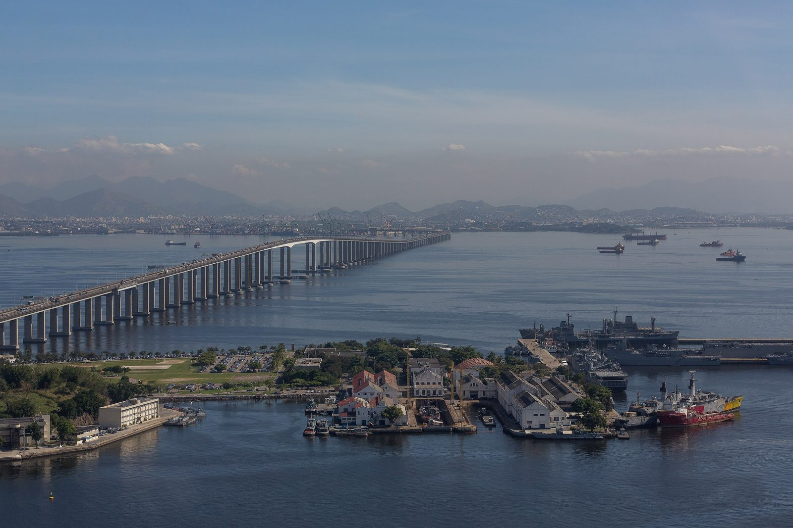
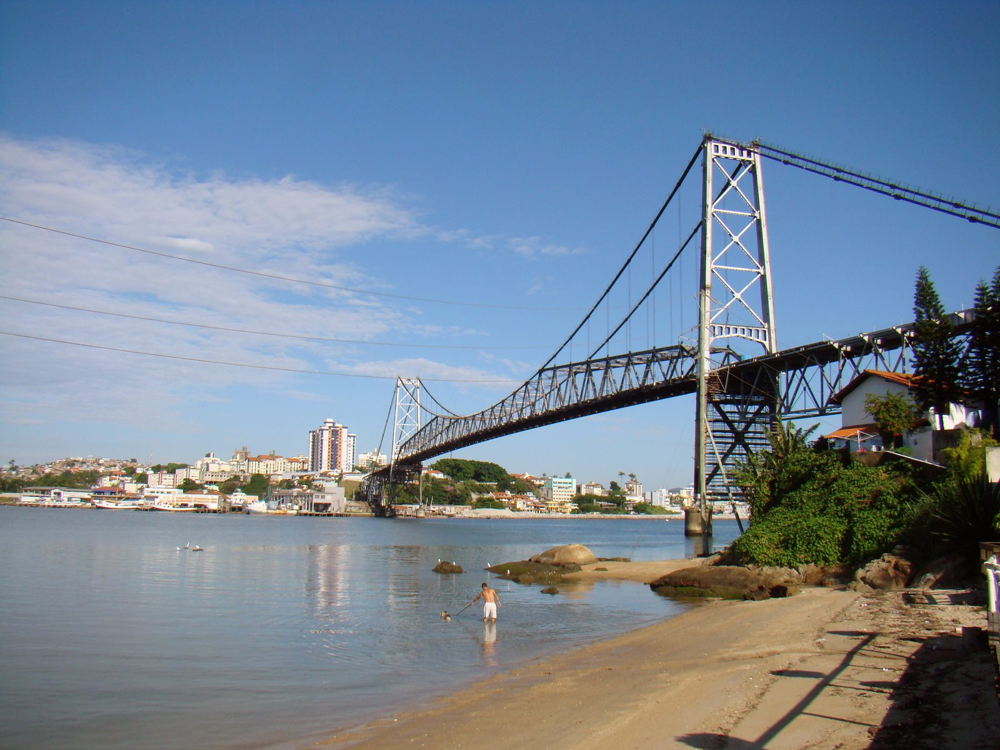
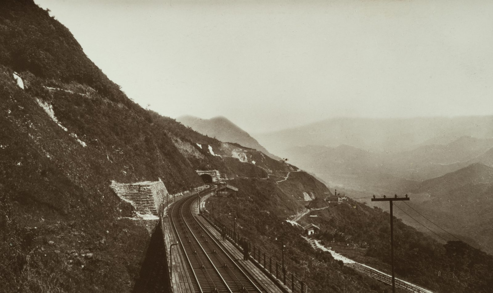
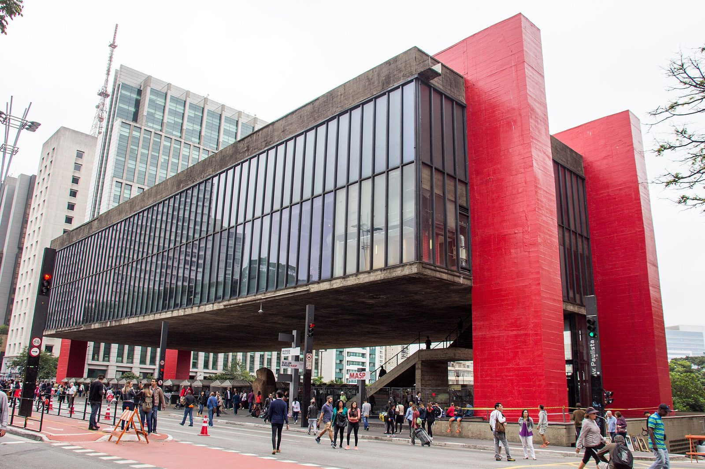
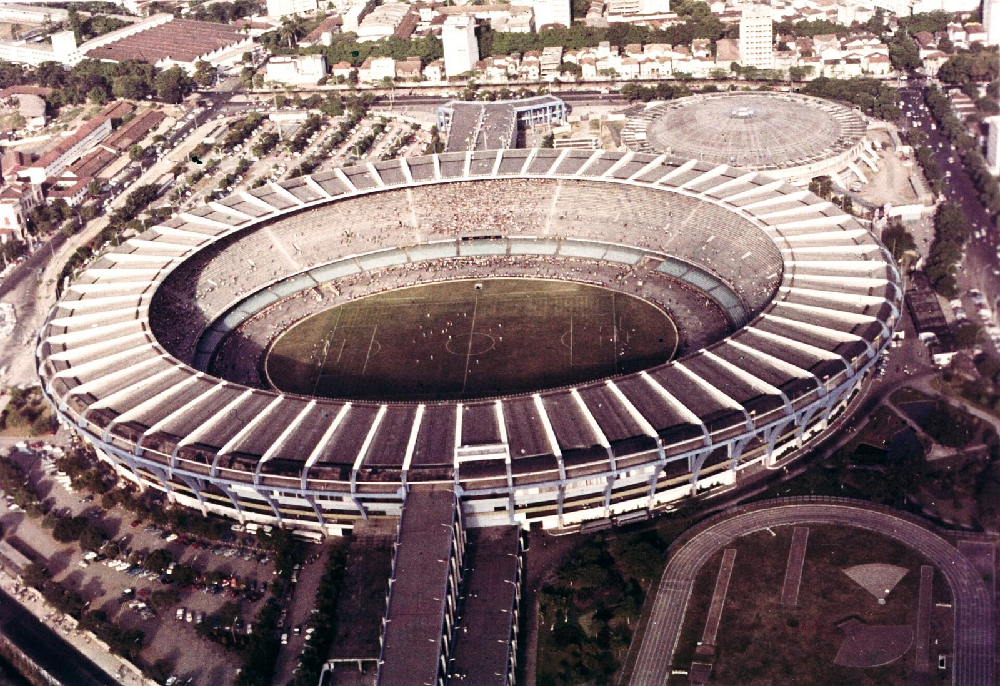
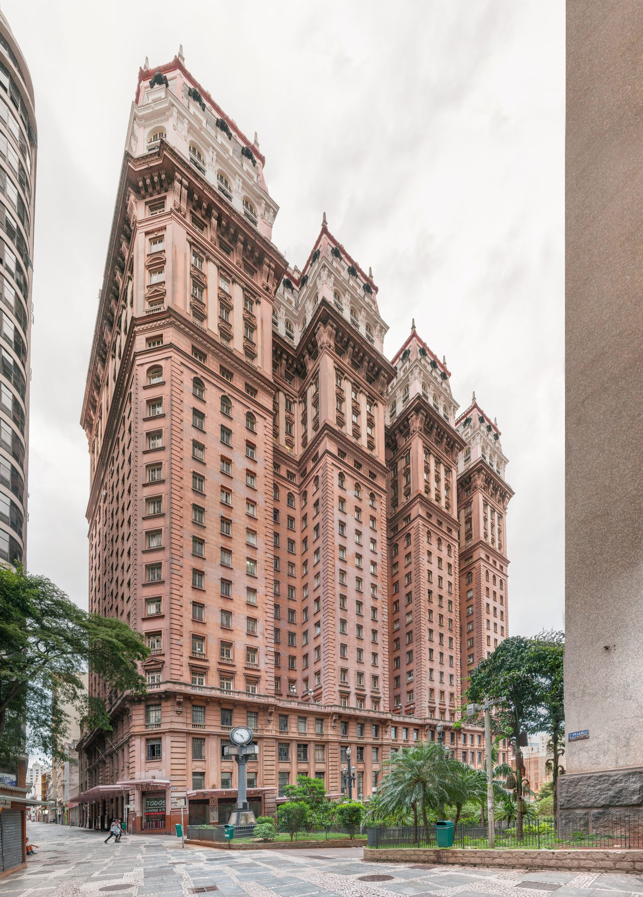

Grandes obras de Brasil
De lo alto del Corcovado a la selva de Rondônia, las obras brasileñas de este sitio tienen en común un problema que parecía no tener solución. El Cristo Redentor (1922–1931) es una figura de 38 m de concreto armado, con piel de esteatita, en la cumbre de una aguja de granito. El Maracaná estuvo listo en menos de dos años para la Copa de 1950, y el Congreso Nacional se inauguró con Brasilia, el 21 de abril de 1960, todavía inconcluso.
En São Paulo, el Santos-Jundiaí venció la Serra do Mar en 1867, el Martinelli subió a 30 pisos cuando casi ningún edificio de la ciudad pasaba de cinco y el MASP suspendió un museo entero 8 m por encima de la Avenida Paulista. En Florianópolis, el Puente Hercílio Luz estuvo 28 años cerrado antes de reabrir en 2019. En la Amazonía, el Madeira-Mamoré tendió rieles por más de 360 km de selva, pantano y rápidos.
Sobre el agua, el Puente Río-Niterói cruzó la bahía de Guanabara con más de 13 km de puente, e Itaipú desvió el río Paraná para levantar una represa de 196 m en la frontera con Paraguay. Cada página trae la ficha completa, con el grado de confianza de cada cifra.
Las obras de este tema
-

Cristo Redentor
Corcovado, Río de Janeiro, Brasil · 1922–1931Cómo se levantó el Cristo Redentor en el Corcovado: concreto armado, cabeza modelada en París, piel de esteatita y los números que nadie anotó.
BrasilLeer la obra → -

Puente Río–Niterói
Bahía de Guanabara, entre Río de Janeiro y Niterói, Brasil · 1969–1974Cómo se construyó el Puente Río-Niterói: más de 13 km sobre la Guanabara, un vano de acero entre barcos y aviones y una cuenta de muertos que nunca cerró.
BrasilLeer la obra → -

Central Hidroeléctrica de Itaipú
Río Paraná, entre Foz do Iguaçu, Brasil, y Hernandarias, Paraguay · 1975–1984Cómo Brasil y Paraguay desviaron el río Paraná, levantaron Itaipú y cubrieron Sete Quedas en 14 días, y por qué la cifra de muertos sigue siendo estimada.
BrasilLeer la obra → -

Ferrocarril Madeira-Mamoré
De Porto Velho a Guajará-Mirim, Rondonia, Brasil · 1907–1912Cómo el Madeira-Mamoré cruzó pantanos, rápidos y la malaria en la Amazonía, y por qué la cifra de muertos va de menos de 2 mil a 6 mil o más.
BrasilLeer la obra → -

Puente Hercílio Luz
Estrecho entre la Isla de Santa Catarina y el continente, Florianópolis, Santa Catarina, Brasil · 1922–1926Cómo Florianópolis obtuvo el Puente Hercílio Luz, colgante de cadenas, en 1926, por qué estuvo 28 años cerrado y qué hubo que cambiar para reabrirlo.
BrasilLeer la obra → -

Congreso Nacional
Plaza de los Tres Poderes, Brasilia, Distrito Federal, Brasil · 1957–1960Cómo Niemeyer y el calculista Joaquim Cardozo hicieron las cúpulas y las torres del Congreso para el 21/04/1960, y qué faltaba el día de la inauguración.
BrasilLeer la obra → -

Ferrocarril Santos–Jundiaí
Serra do Mar, entre Santos y Jundiaí, pasando por la ciudad de São Paulo, estado de São Paulo, Brasil · 1860–1867Cómo la São Paulo Railway, la Santos-Jundiaí, venció la Serra do Mar en 1867 con cuatro rampas, cable de acero y vapor, y por qué la idea volvió en 2026.
BrasilLeer la obra → -

MASP (Museo de Arte de São Paulo)
Avenida Paulista, barrio de Bela Vista, São Paulo, Brasil · 1960–1968Cómo Lina Bo Bardi y Figueiredo Ferraz suspendieron el MASP sobre un vano libre en la Paulista, por qué terminó rojo y qué cambió allí en 2026.
BrasilLeer la obra → -

Estadio Maracaná
Barrio de Maracanã, Río de Janeiro, estado de Río de Janeiro, Brasil · 1948–1950Cómo Río alzó el Maracaná en menos de dos años, el mayor estadio de su época, para el Mundial de 1950, y por qué derribó su marquesina sin pilares en 2011.
BrasilLeer la obra → -

Edificio Martinelli
Rua São Bento, Avenida São João y Rua Líbero Badaró, centro de São Paulo, São Paulo, Brasil · 1924–1934Cómo un inmigrante italiano llevó el Martinelli de 12 o 14 a 30 pisos, enfrentó la clausura, vivió en la cima y perdió el edificio por sus deudas.
BrasilLeer la obra →


Otros temas
Las obras agrupadas por el problema que resolvieron: puentes, rascacielos, túneles, estadios, agua.